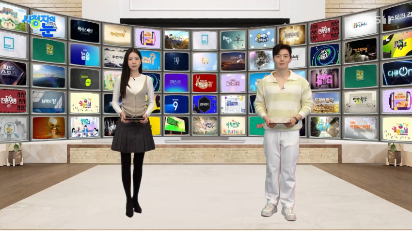
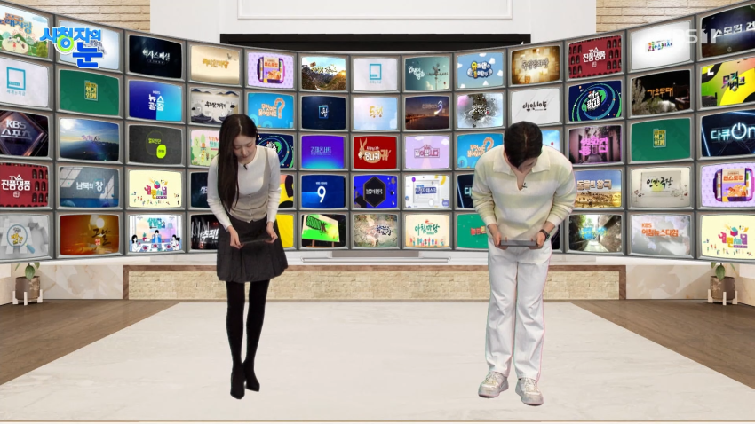
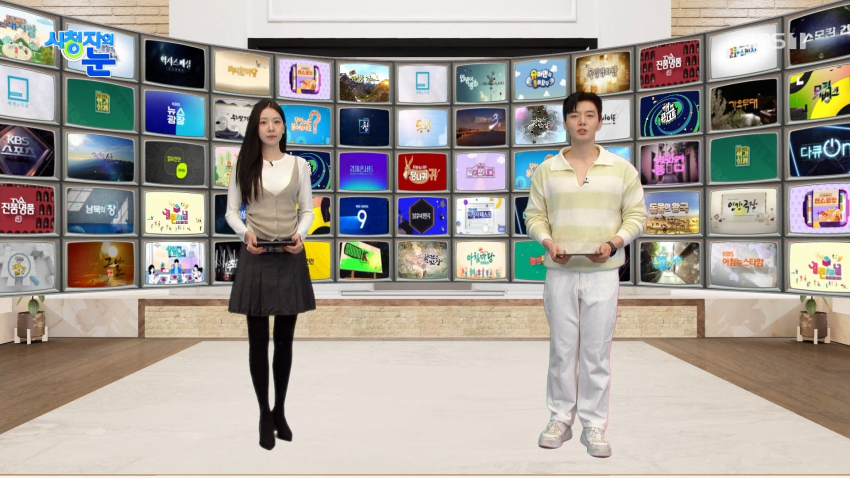
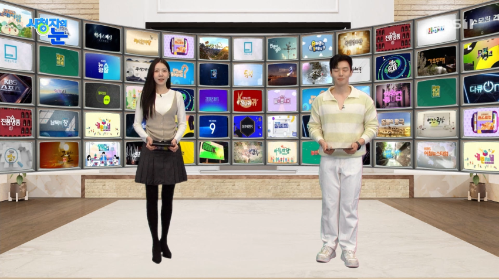
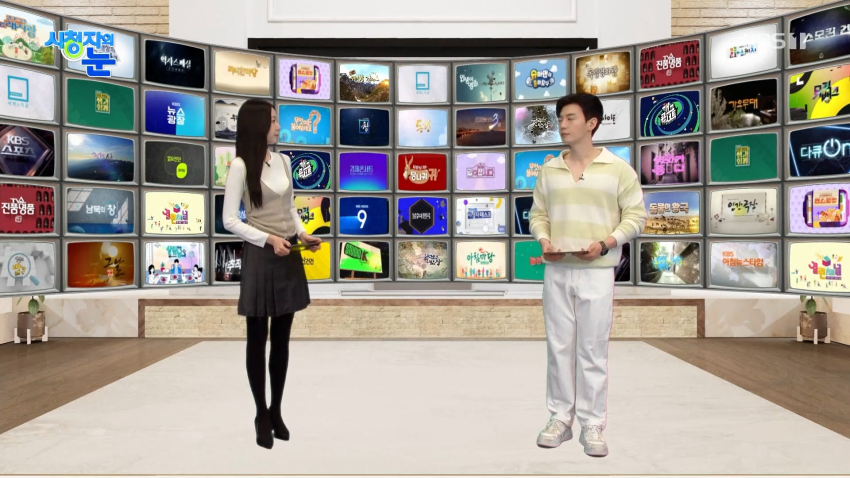
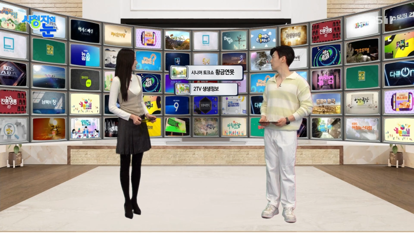
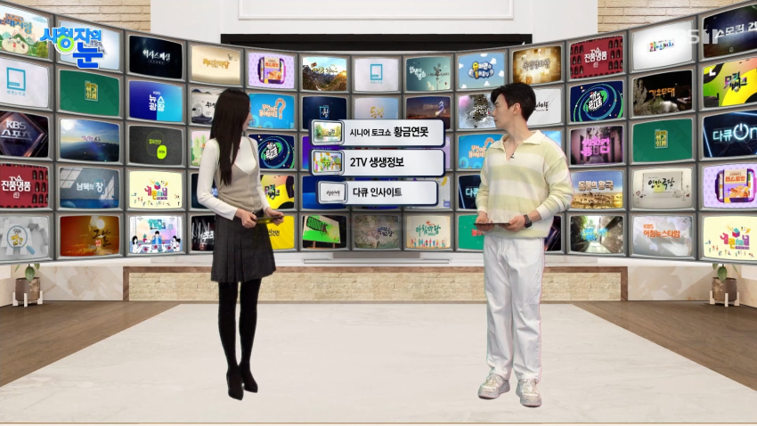
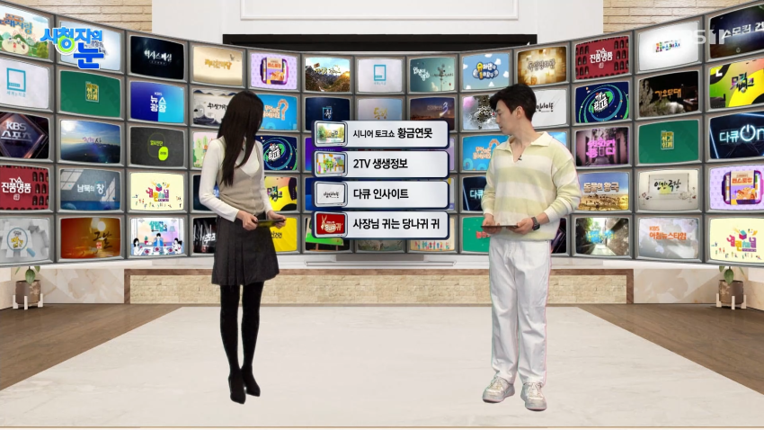
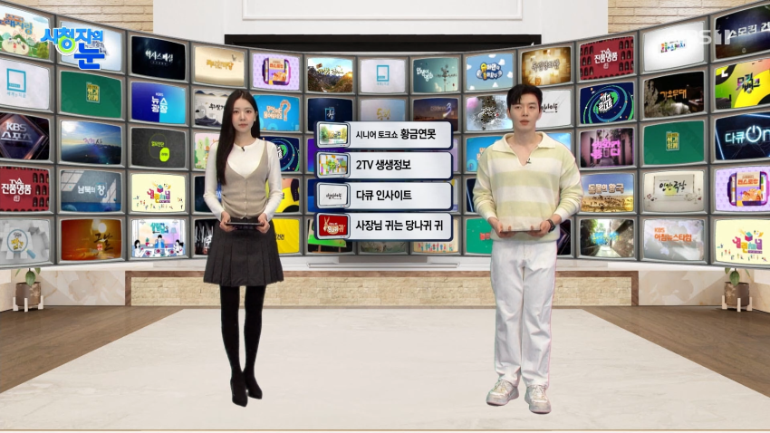
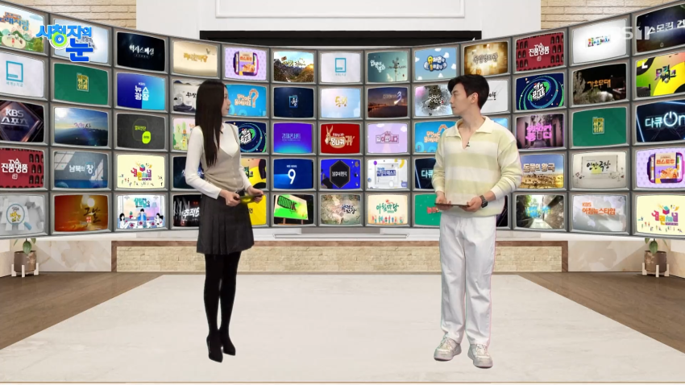
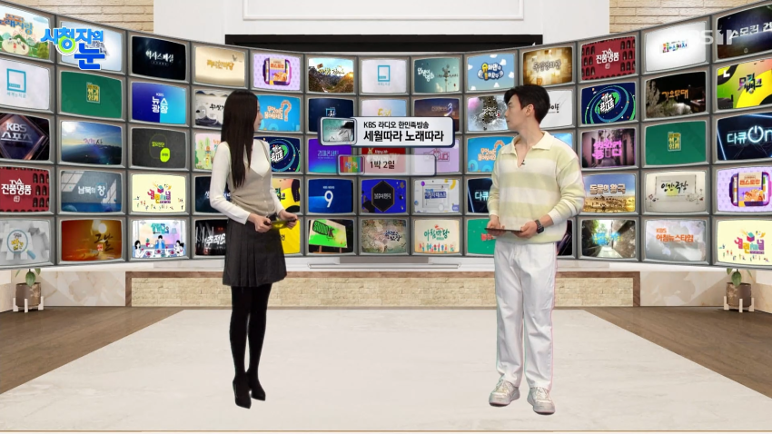
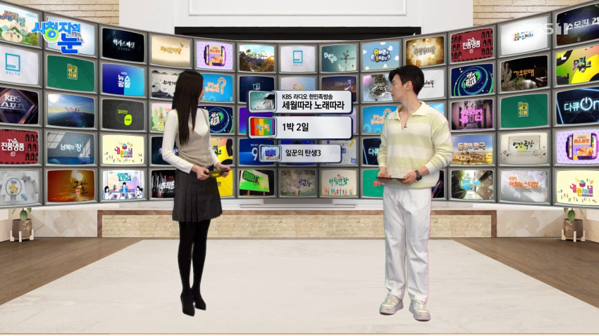
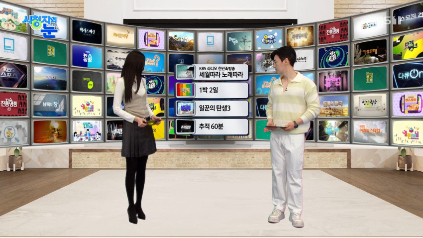
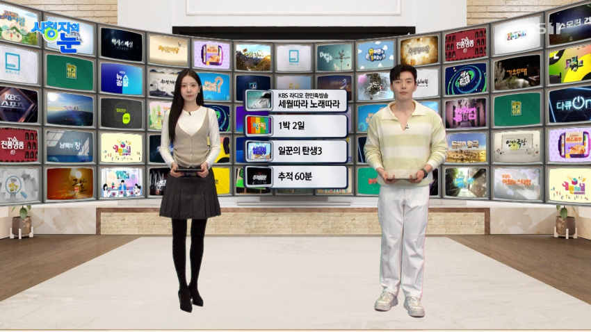
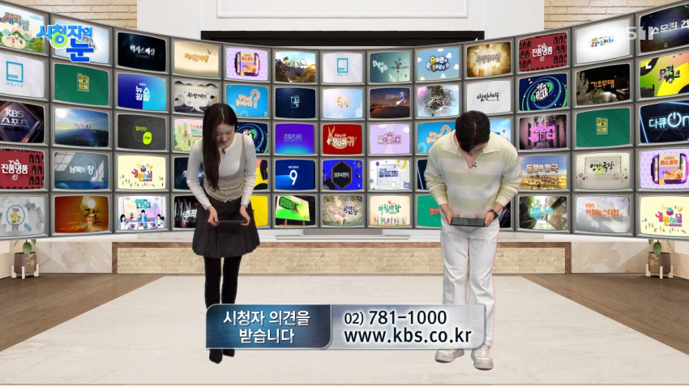
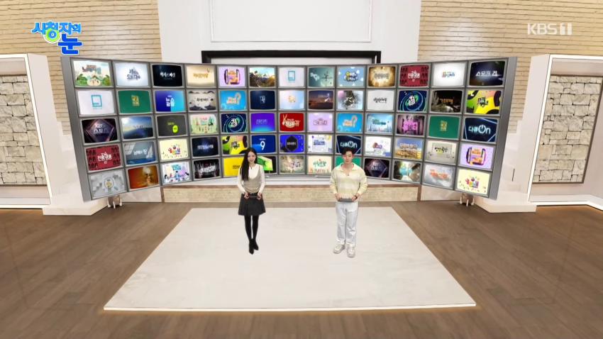
















댓글
수집 당시 댓글 15개
아갤러1 · 11.15 12:31:32
아갤러2 · 11.15 13:06:58
아갤러4 · 11.15 13:55:25
아갤러5 · 11.15 13:59:12
ㅇㅇ · 11.15 14:51:27
봇치쟝 · 11.15 15:03:16
ㅇㅇ · 11.15 15:05:51
hallow_ · 11.15 15:24:13
ㅇㅇ · 11.15 15:27:31
ㅇㅇ · 11.15 15:32:53
ㅇㅇ · 11.15 15:45:54
ㅇㅇ · 11.15 15:54:47
ㅇㅇ · 11.15 15:59:49
ㅇㅇ · 11.15 16:02:05
ㅇㅇ · 11.15 16:24:29